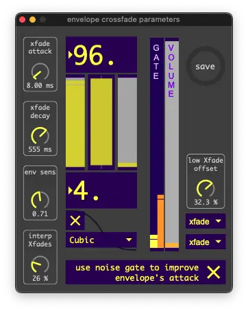

Envelope Crossfade
The Envelope Crossfade was created to fade between subtle effects, and dubstep effects, based on the loudness of the tuba’s input. Since instrumental sounds are mainly identified by their attacks, this allows the tuba to still be identifiable as a tuba while also having wild effects.
The Envelope Crossfade is post-crossover. It basically controlls three things:

The octaver’s amplitude modulation amount.
The low crossover’s amplitude modulation amount.
The high crossover’s mix between the attack fx and sustain fx.
{kind=link}
xfade attack
How quickly the crossfade can rise.
xfade decay
How quickly the crossfade can fall.
env sens
How sensitive the envelope is to the incoming audio.
interp xfades
Interpolate between a linear crossfade and an equal-power crossfade. At 0% the crossfade may have a volume dip in the center. At 100% the crossfade may have a volume boost in the center.
high and low val
The two large numbers set the crossfade’s range within the envelope.
invert envelope
The toggle above the ease menu inverts the crossfade.
ease menu
This menu selects the easing function for the crossfade. The steeper the easing function, the more quickly the crossfade occurs.
gate slider
Sets SousaFX’s main noise gate. Set it low for playing at home, and higher when performing live. The Modulation Parameters’ envelope begins at the bottom of this gate, regardless of where it’s set. Why is SousaFX’s main noise gate in the Envelope Crossfade window? Because it’s also used to…
“improve envelope’s attack” toggle
...improve the attack’s transients by maxing out the envelope whenever it’s below the noise gate.
Note
After a period of inactivity, the noise gate auto-increases a little, which prevents the gate from being triggered by simply picking up the tuba.
low xfade offset knob
Offsets the crossfade’s center for the low frequencies. 0 - 30 % is recommended. This makes the low amplitude modulation fade in before the high frequency modulation fades in, which sounds quite nice. Check out the Mix Bus to observe the effects of this parameter.
xfade menus
Set wether or not the octaver and low frequencies are affected by the crossfade.